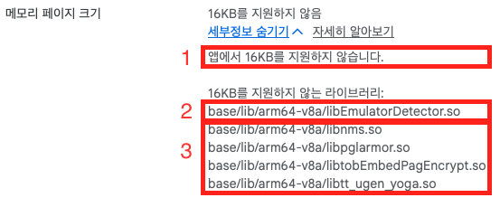

Android 15+ 기기 대응을 위한 16KB 페이지 크기 지원#
16KB Google Play 호환성 요구사항#
2025년 11월 1일부터 Google Play에 제출되는 신규 앱과 기존 앱 업데이트는 Android 15 이상을
타겟팅한다면 64비트 기기에서 16KB 페이지 크기를 지원해야 한다. 앱 코드를 고치라는 얘기가 아니라,
앱에 들어가는 모든 네이티브 라이브러리(.so)가 16KB 경계에 정렬돼 있어야 한다는 뜻이다.
어쩌다 알게 됐나#
빌드를 올리자 Play Console에 다음 경고가 표시됐다.

읽는 법은 단순하다.
- 결론 — 앱이 16KB를 지원하지 않는다.
- 직접 빌드한 라이브러리 —
libEmulatorDetector.so. 앱플레이어를 가려내려고 만들어 쓰던 네이티브 플러그인이다. 빌드 스크립트가 내 손에 있으니 직접 고칠 수 있다. - 서드파티 SDK가 들고 들어온 라이브러리 —
libnms.so,libpglarmor.so,libtobEmbedPagEncrypt.so,libtt_ugen_yoga.so. 이쪽은 제공처가 16KB 대응 버전을 내주기를 기다리거나 SDK 버전을 올리는 방법밖에 없다.
같은 경고 안에서도 대응 난이도는 완전히 갈린다. 직접 빌드한 라이브러리는 지금 고칠 수 있지만, 서드파티 라이브러리는 제공처 일정에 달려 있다. 이 글은 전자를 어떻게 고쳤는지에 대한 기록이다.
먼저 Android 공식 문서를 읽었다.
지금까지 Android는 4KB 메모리 페이지를 전제로 동작해 왔지만, Android 15부터 16KB 페이지를 쓰는
기기가 등장한다. 공유 라이브러리는 로드될 때 페이지 경계에 맞춰 매핑되므로, 4KB 경계로 링크된
.so는 16KB 페이지 기기에서 그대로 올라가지 못한다. 그래서 .so를 16KB 경계에 정렬해
다시 링크해야 한다.
결국 손볼 곳은 앱 코드가 아니라 해당 .so를 만들어 내는 CMake 빌드 스크립트였다.
문제가 된 라이브러리 — libEmulatorDetector.so#
사용자 디바이스 중 앱플레이어를 가려내는 일은 생각보다 까다롭다. BlueStacks, Nox, LDPlayer 같은 앱플레이어는 결국 Windows나 macOS 위에서 도는 Android 가상 환경이다. 겉으로는 평범한 Android 기기처럼 보이고, Java 레이어에서 볼 수 있는 정보만으로는 구분이 잘 되지 않는다. 가상 환경이라는 사실이 드러나는 흔적은 대체로 시스템 프로퍼티, 마운트 정보, CPU 정보, 앱플레이어마다 남기는 특징적인 파일에 있다.
그래서 C++로 작성된 오픈소스 구현을 기반으로 필요한 부분을 다듬어 CMake로 빌드한 뒤 Unity 네이티브 플러그인으로 사용하고 있었다. 구성은 다음과 같다.
- 빌드: Android NDK r27d와 CMake,
ANDROID_PLATFORM=android-21 - ABI:
arm64-v8a하나만 빌드 - 산출물:
libEmulatorDetector.so. STL을c++_shared로 사용하므로 NDK가 제공하는libc++_shared.so도 함께 동봉 - 연동:
extern "C"로 내보낸 함수를 C#에서DllImport로 호출 - 배치:
Assets/EmulatorDetector/Plugins/Android/아래에.so두 개
이 .so는 Unity가 만들어 주는 것도, 서드파티에서 받은 것도 아니다. 빌드 스크립트를 직접
관리하고 있으므로 대응할 수 있다.
정말 문제인지 확인하기#
.so가 몇 바이트 경계로 정렬됐는지는 ELF 프로그램 헤더의 LOAD 세그먼트 Align 값을 보면 된다.
readelf -lW libEmulatorDetector.so | grep LOAD
대응 전 출력은 다음과 같았다.
LOAD 0x000000 0x0000000000000000 0x0000000000000000 0x013110 0x013110 R E 0x1000
LOAD 0x013110 0x0000000000014110 0x0000000000014110 0x0006e8 0x000ef0 RW 0x1000
LOAD 0x0137f8 0x00000000000157f8 0x00000000000157f8 0x000020 0x001460 RW 0x1000
정렬 판정 기준
맨 오른쪽 Align 열이 0x1000, 즉 4,096바이트다. 4KB 정렬이라는 뜻이고,
필요한 값은 0x4000, 즉 16,384바이트다. 이 라이브러리가 경고의 원인임을 확인했다.
함께 넣는 libc++_shared.so도 확인했다.
LOAD 0x000000 0x0000000000000000 0x0000000000000000 0x09aca8 0x09aca8 R 0x4000
LOAD 0x09acb0 0x000000000009ecb0 0x000000000009ecb0 0x096640 0x096640 R E 0x4000
LOAD 0x1312f0 0x00000000001392f0 0x00000000001392f0 0x009b50 0x009d10 RW 0x4000
LOAD 0x13ae40 0x0000000000146e40 0x0000000000146e40 0x000238 0x007d10 RW 0x4000
이쪽은 이미 0x4000이었다. NDK r27이 함께 제공하는 STL은 애초에 16KB로 링크돼 있다.
따라서 고칠 대상은 직접 빌드한 .so 하나로 좁혀졌다.
시도한 것들#
시도 1 — 링커에 max-page-size를 직접 넘기기#
문서에 나온 대로 링커에 최대 페이지 크기를 지정하면 될 것 같았다. CMakeLists.txt에
target_link_options로 플래그를 넣었다.
cmake_minimum_required(VERSION 3.13) # target_link_options가 3.13부터 지원
project(EmulatorDetector)
add_library(EmulatorDetector SHARED src/EmulatorDetection.cpp)
target_link_options(EmulatorDetector PRIVATE "-Wl,-z,max-page-size=16384")
방향 자체는 틀리지 않았다. -z max-page-size는 실제로 세그먼트 정렬을 결정하는 링커 옵션이다.
문제는 NDK r27에 이 목적을 위한 공식 스위치가 따로 있다는 사실을 모른 채, 링커 플래그를 손으로
넣고 있었다는 점이다.
시도 2 — 이름이 비슷한 것들을 전부 켜기#
NDK 문서에서 ANDROID_SUPPORT_FLEXIBLE_PAGE_SIZES라는 이름을 보고, 이 값을 켜야 한다고 생각해
CMakeLists.txt에 관련돼 보이는 설정을 모두 넣었다.
# NDK r27 이상
set(CMAKE_ANDROID_APP_SUPPORT_FLEXIBLE_PAGE_SIZES ON)
target_compile_definitions(EmulatorDetector PRIVATE
APP_SUPPORT_FLEXIBLE_PAGE_SIZES=1
)
target_link_options(EmulatorDetector PRIVATE
"-Wl,-z,max-page-size=16384"
"-Wl,-z,common-page-size=16384"
"-Wl,--rosegment"
"-Wl,-z,separate-loadable-segments"
)
결과적으로 모두 잘못된 접근이었다.
CMAKE_ANDROID_APP_SUPPORT_FLEXIBLE_PAGE_SIZES는 NDK 툴체인 파일이 읽는 변수가 아니다. 툴체인 파일은CMakeLists.txt보다 먼저 처리되므로,CMakeLists.txt안에서 값을 설정해도 늦다.target_compile_definitions는 컴파일 단계 매크로를 추가할 뿐이다. 페이지 정렬은 링크 단계에서 세그먼트를 배치하는 문제와 관련 있다.--rosegment와-z separate-loadable-segments는 세그먼트를 더 잘게 나누는 옵션이다. 정렬과 직접 관계가 없고, 결과적으로.so크기만 985,472바이트에서 1,003,912바이트로 약 18KB 늘었다.
이름이 그럴듯해 보이는 옵션을 한꺼번에 켜는 방식은 대개 문제를 풀지 못한다. 더 나쁜 점은 어떤 설정이 효과가 있었는지도 알 수 없게 만든다는 것이다.
실제로 해결한 방법#
해결 지점
답은 CMakeLists.txt가 아니라 빌드 스크립트의 CMake configure 단계에 있었다.
필요한 것은 플래그 한 줄이다.
cmake -G "MinGW Makefiles" ^
-DCMAKE_TOOLCHAIN_FILE="%CMAKE_TOOLCHAIN_FILE%" ^
-DANDROID_ABI=arm64-v8a ^
-DANDROID_PLATFORM=android-21 ^
-DCMAKE_BUILD_TYPE=Release ^
-DANDROID_STL=c++_shared ^
-DANDROID_SUPPORT_FLEXIBLE_PAGE_SIZES=ON ^
-DCMAKE_MAKE_PROGRAM="%ANDROID_NDK_HOME%\prebuilt\windows-x86_64\bin\make.exe" ^
..
ANDROID_ABI, ANDROID_PLATFORM, ANDROID_STL과 마찬가지로
ANDROID_SUPPORT_FLEXIBLE_PAGE_SIZES도 NDK 툴체인 파일이 읽는 값이다. 툴체인 파일은
configure가 시작될 때 가장 먼저 처리되므로, -D로 커맨드라인에서 넘겨야 한다.
CMakeLists.txt 안에서 set 하는 것으로는 켤 수 없으며, 시도 2가 실패한 이유도 여기에 있다.
CMakeLists.txt에서는 오히려 불필요한 설정을 제거했다.
set(CMAKE_ANDROID_APP_SUPPORT_FLEXIBLE_PAGE_SIZES ON)
target_compile_definitions(EmulatorDetector PRIVATE
APP_SUPPORT_FLEXIBLE_PAGE_SIZES=1
)
target_link_options(EmulatorDetector PRIVATE
"-Wl,-z,max-page-size=16384"
"-Wl,-z,common-page-size=16384"
"-Wl,--rosegment"
"-Wl,-z,separate-loadable-segments"
)
target_link_options(EmulatorDetector PRIVATE
"-Wl,-z,max-page-size=16384"
"-Wl,-z,common-page-size=16384"
)
링커 플래그 두 줄은 남겼다. 툴체인 스위치를 켜면 이 두 줄이 없어도 결과는 같다.
NDK r28 이상
이 스위치가 필요한 이유는 NDK r27을 사용하기 때문이다. 공식 문서에 따르면 r28부터는 16KB 정렬이 기본값이므로, NDK를 올릴 수 있다면 플래그 없이 해결되는 문제이기도 하다.
검증#
같은 명령을 다시 실행했다.
readelf -lW libEmulatorDetector.so | grep LOAD
LOAD 0x000000 0x0000000000000000 0x0000000000000000 0x013110 0x013110 R E 0x4000
LOAD 0x013110 0x0000000000017110 0x0000000000017110 0x0006e8 0x000ef0 RW 0x4000
LOAD 0x0137f8 0x000000000001b7f8 0x000000000001b7f8 0x000020 0x001460 RW 0x4000
Align이 세 세그먼트 모두 0x4000, 즉 16,384바이트가 됐다.
파일 크기 변화도 기록해 둘 만하다.
| 시점 | 크기 |
|---|---|
| 대응 전 | 985,472바이트 |
| 시도 2: 불필요한 세그먼트 분리 옵션 포함 | 1,003,912바이트 |
| 최종 | 985,472바이트 |
16KB 정렬 자체는 파일 크기를 늘리지 않았다. 시도 2에서 늘어난 약 18KB는 정렬과 무관한
--rosegment과 separate-loadable-segments 때문이었다. 코드가 바뀐 것이 아니라 세그먼트
배치만 바뀌었으므로 자연스러운 결과다.
남은 것들 / 배운 것#
| 확인 항목 | 상태 |
|---|---|
직접 빌드한 libEmulatorDetector.so |
16KB 정렬 완료 |
NDK 동봉 libc++_shared.so |
원래부터 16KB, Align 0x4000 |
| 지원 ABI | arm64-v8a 단일 — 16KB 요구사항은 64비트 기기 대상 |
서드파티 SDK의 .so 4종 |
직접 대응 불가 — SDK 업데이트 대기 |
다시 같은 상황을 만난다면 다음 순서로 진행한다.
- 걸린 파일 목록부터 확보한다. Play Console이 이미 알려주지만, 업로드 전에 알고 싶다면
APK 또는 AAB 안의
.so를 전부 뽑아readelf -lW출력의Align을 확인한다. - 직접 빌드하는 라이브러리와 받아 쓰는 라이브러리를 나눈다. 전자는 빌드 옵션으로 끝나고, 후자는 버전 업데이트나 제공처 문의가 필요하다. 대응 난이도가 완전히 다르다.
- 직접 빌드하는 라이브러리는 툴체인 스위치를 먼저 찾는다. 링커 플래그를 손으로 넣기 전에 NDK가 제공하는 공식 옵션이 있는지 확인한다.
가장 크게 남은 교훈은 세 번째다. 빌드 옵션이 먹지 않을 때는 옵션 이름을 의심하기 전에 그 값이
어느 단계에서 읽히는지 확인해야 한다. 툴체인 변수는 configure가 시작될 때 처리되므로
CMakeLists.txt 안에서는 손댈 수 없다. 이 사실을 몰라서 켰다고 생각한 옵션이 실제로는 꺼져
있었고, 그 상태로 다른 플래그를 계속 얹고 있었다.